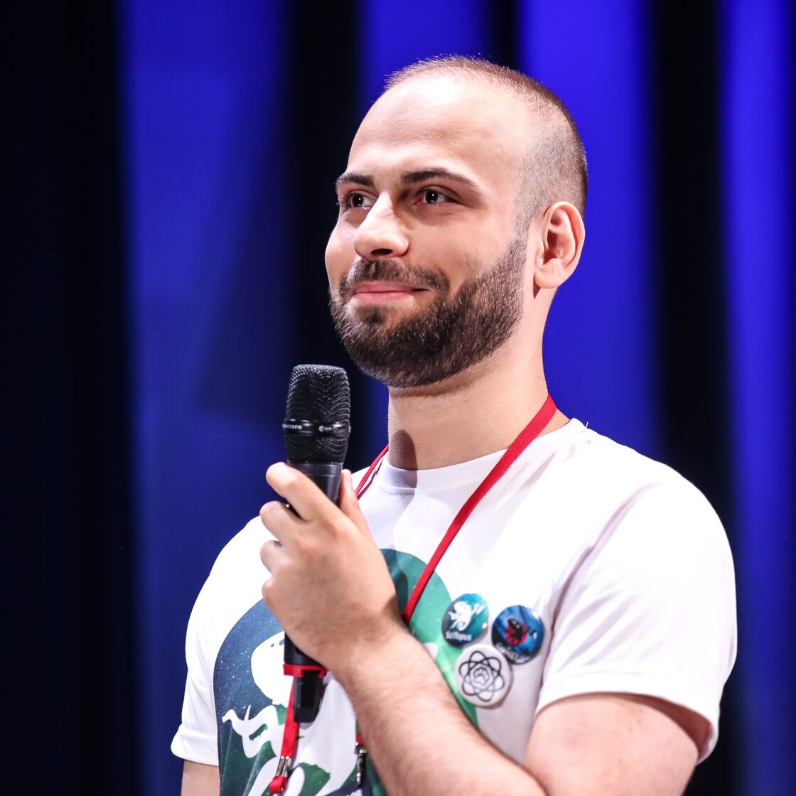
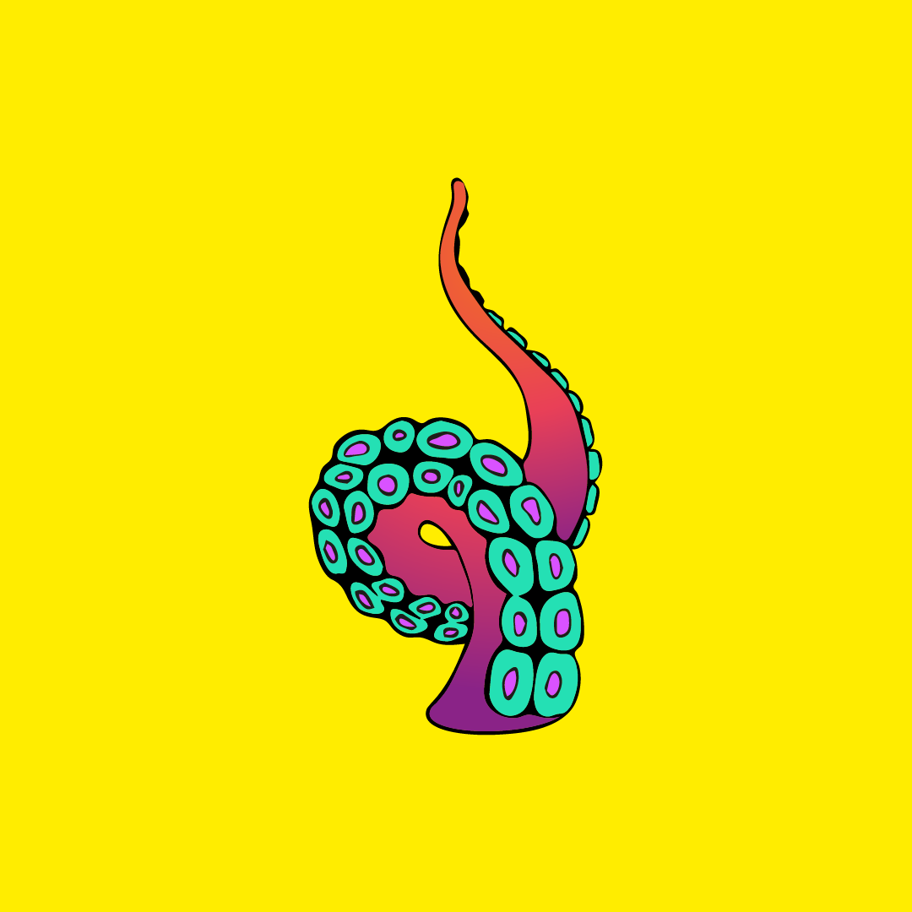
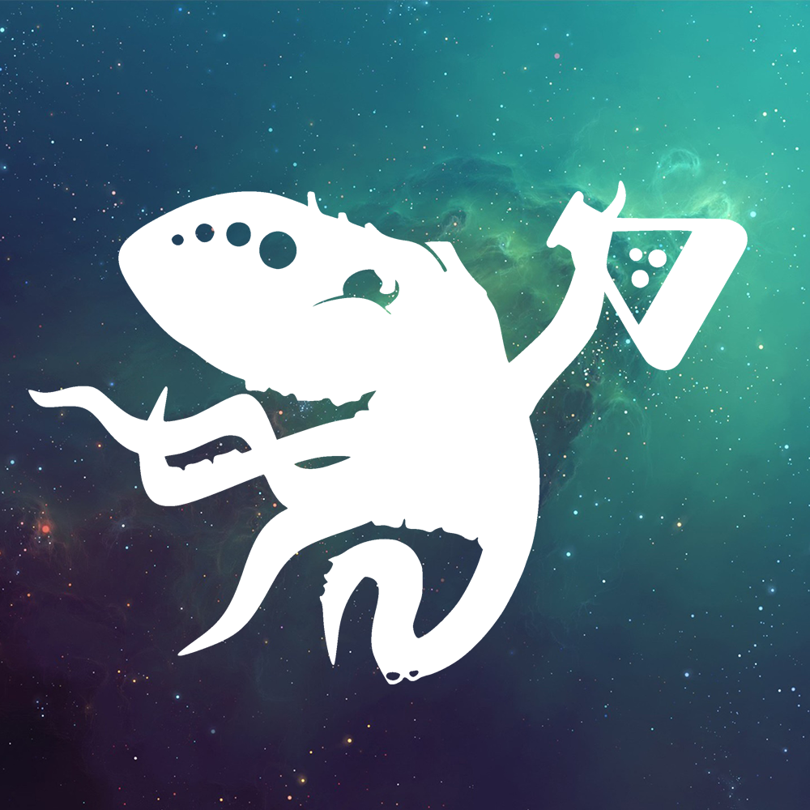
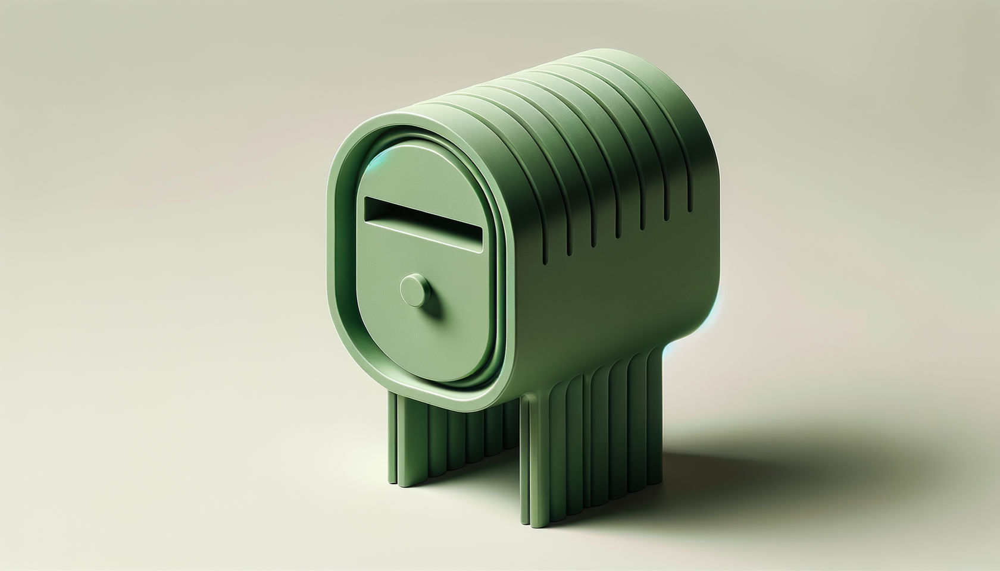
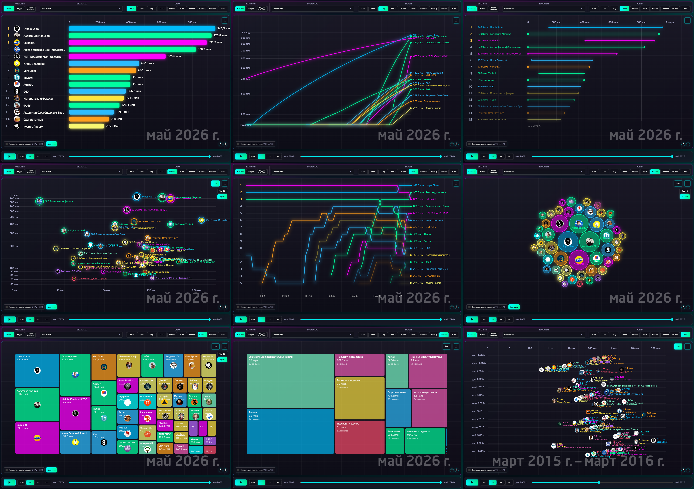
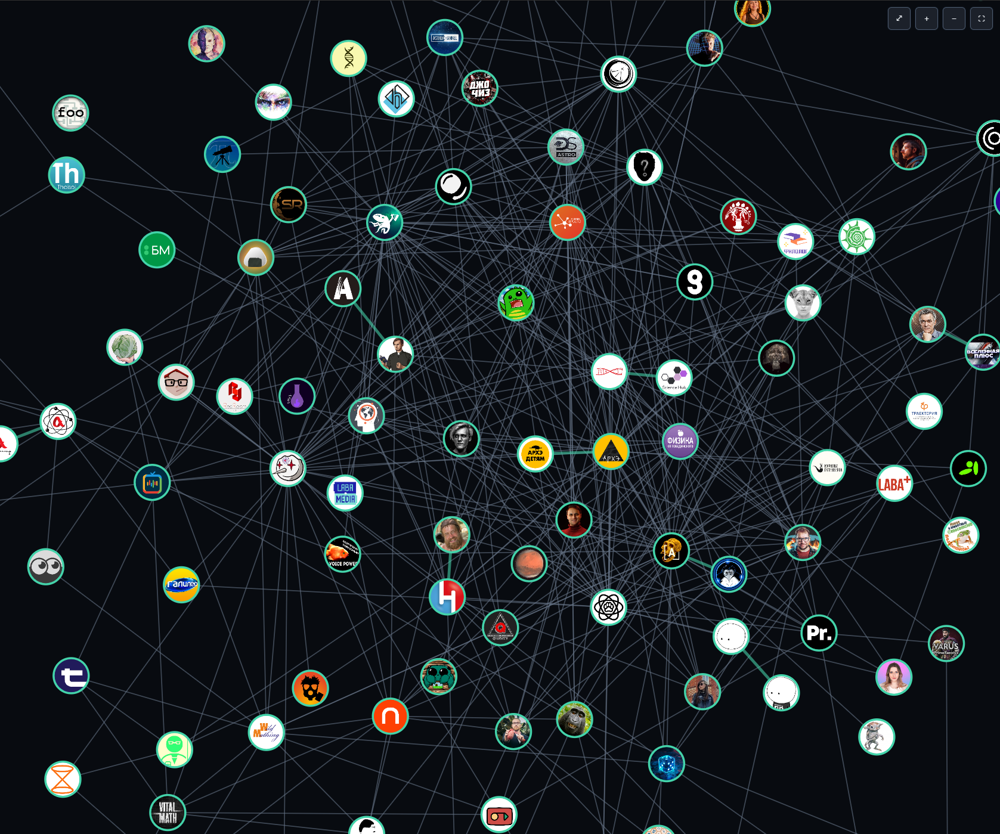
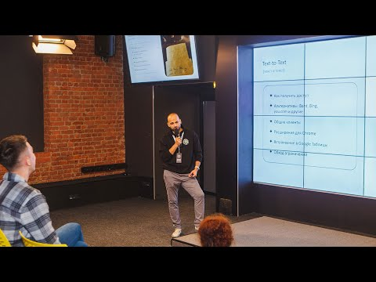
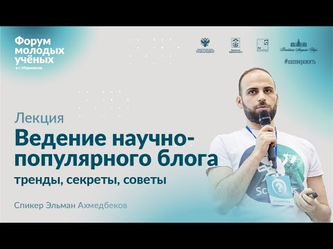
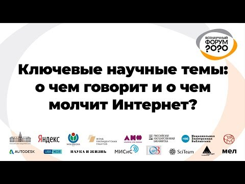
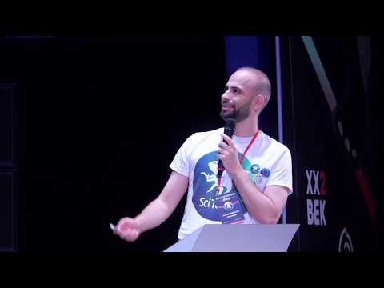

Product & GTM
Стратегия продукта, позиционирование, монетизация, пользовательские сценарии, запуск и выход на рынок.
ЭЛЬМАН
АХМЕДБЕКОВ
Запускаю продукты, выстраиваю маркетинговые и операционные системы, исследую рынки и превращаю нетиповые задачи в работающие решения.
15+ лет на стыке бизнеса, данных, медиа и технологий — от creator economy и AI-продуктов до международных операций и специальных коммерческих проектов.
Избранные работы
Мой способ работы: разобраться в предметной области, собрать данные, найти механику и организовать исполнение. Я соединяю коммерческие задачи, продуктовые решения и практическую работу с технологиями.
Базируюсь в Баку. Работал с компаниями из США, Новой Зеландии, Сингапура, Азербайджана, Франции и других рынков.
Стратегия продукта, позиционирование, монетизация, пользовательские сценарии, запуск и выход на рынок.
Маркетинговая стратегия, CRM, customer journey, операционные процессы, цифровые системы и автоматизация.
Проектирование прикладных систем, где чат-бот — только понятный интерфейс: данные, роли, маршруты, уведомления, модерация и связанные процессы за ним.
Исследование авторов, influencer-стратегия, партнёрства и инфраструктура кампаний в экосистеме YouTube.
Исследования рынков, сбор и структурирование данных, конкурентная разведка, аналитика, дашборды и визуализация.
Медиа-продукты, сообщества, публикационные процессы и механики роста — от редакционной логики до инструментов и инфраструктуры.
Нестандартные коммерческие, операционные и организационные задачи: от определения проблемы и переговоров до работающего процесса.
Монетизация авторов, AdSense operations, распределение доходов, сверки и выплаты. Помощь с возвратом удержанного в США налога по подходящим YouTube/AdSense-кейсам — с учётом применимого соглашения и процедуры.

Creator economy · Marketing · Data
От подбора авторов — к собственной creator intelligence инфраструктуре.
Основатель · исполнительный директор
Запустил агентство, разработал методологию подбора авторов и организовал системы поиска, анализа и сопровождения кампаний. База и автоматизации поддерживают работу с 100,000+ каналов независимых авторов.
106 224 канала в срезе инфраструктуры от июля 2026; это размер базы, а не число клиентов или собственных каналов.

Media · Data · Community
Научная коммуникация как связанная экосистема медиа, данных и сообщества.
Основатель · руководитель проекта
Развивал каталог и сообщество авторов, публикационные инструменты и исследовательскую инфраструктуру. Анализ 170 000 видео дополнили интерактивный дашборд и граф связей каналов.
594 канала · 19 лет наблюдений · исследование опубликовано в 2025 году.
AI product · Strategy · GTM
Продуктовая стратегия и выход на рынок AI-агрегатора.
Product & Marketing Strategy Advisor
Работал над позиционированием, пользовательскими сценариями, тарифами и unit-экономикой. Участвовал в приоритизации гипотез, постановке задач, тестировании UX и развитии партнёрских механик.
Advisory-роль · январь 2024 — июль 2025.

Product · Industry initiative
Закрытая механика для срочно освободившихся рекламных слотов.
Идея · сборка · запуск
Из повторяющихся запросов агентств собрал рабочий агрегатор: две формы, два Telegram-бота, модерация и закрытый доступ. Запуск и управление — в сотрудничестве с АРИР.
От проблемы до запуска · декабрь 2024.
Решения из конкретной необходимости или профессионального любопытства.
Доступность · социальная инициатива
Коммуникатор для азербайджаноязычных людей с нарушениями речи: азербайджанский и русский, офлайн-синтез речи, экранные клавиатуры и управление переключателями.
Мониторинг · автоматизация
Собирает и фильтрует свежие объявления аренды Баку, сохраняет их в PostgreSQL и доставляет подходящие варианты в Telegram.
Аналитика · визуализация
Дашборд, граф коллабораций и bar chart race помогают исследовать динамику больших наборов видео и связи между авторами.
Браузер · инструмент
Записывает действия пользователя и контекст элементов страницы в структурированный JSON для анализа интерфейсов и подготовки автоматизации.
Данные · сообщества
Структурирует доступные данные профессиональных Telegram-сообществ и экспортирует их в таблицы для дальнейшего анализа.
Creator monetisation · Operations
Внутренняя система учёта доходов и просмотров YouTube/AdSense, платежей, удержаний налога США, комиссий менеджеров и выплат авторам. Сверка и распределение — в одном процессе.
Исследование · эксперимент
Среда симуляции Bitcoin-стратегий: комиссии, проскальзывание, защита от использования будущих данных и оптимизация параметров. Не совершает реальные сделки.
3D · прототип
Интерактивная 3D-презентация мебели для обсуждения конструкции и индивидуального заказа.
Создал десятки небольших инструментов и автоматизаций для данных, браузеров, Telegram, YouTube, Google Sheets и повседневных процессов.
GitHub / ToolsОт сбора данных — к прикладным решениям. Исследую рынки, структурирую большие массивы информации и делаю видимыми динамику и связи.
170 000 видео · читать исследование
Динамика метрик, сравнение каналов, несколько аналитических представлений.

Сети упоминаний, авторские группы и примеры связей.
Авторская статья · 2021
Каталог
Исследование · Всенаука
Авторское исследование · 2025
Публикация о проекте · 2025
СМИ · 2025
Авторская статья · 2024

Выступление

Выступление

Выступление

Выступление
Жюри · экспертное участие
Клиенты, проектные партнёры и профессиональные коллаборации.
Так меня иногда называют коллеги — обычно, когда появляется задача без готового процесса, понятного владельца или стандартного решения.
Я разбираю её на части, нахожу рабочую механику, собираю нужных людей и инструменты и довожу до результата. В разные годы это были нестандартные B2B-продажи, реализация активов, международная логистика, переговоры и недвижимость.
Коммерческие задачи и управление → маркетинговые системы → creator economy → продукты, данные и AI.
Полная карта сохраняет должности, проекты, образование, выступления и профессиональные переходы.
Работа, продукт, партнёрство или задача, с которой пока непонятно, с чего начать.
elman.ahmadbayov@gmail.com+994 50 427 30 10+7 977 846 95 06
В Telegram отвечаю быстрее.